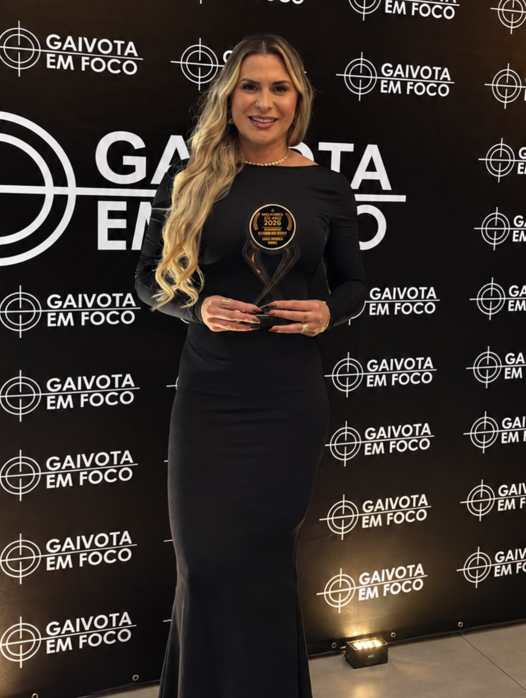
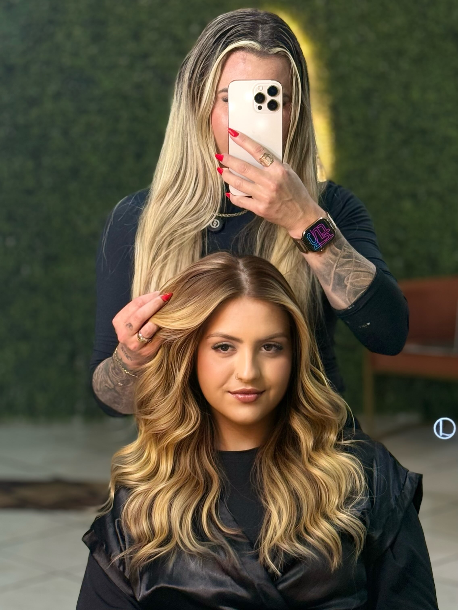
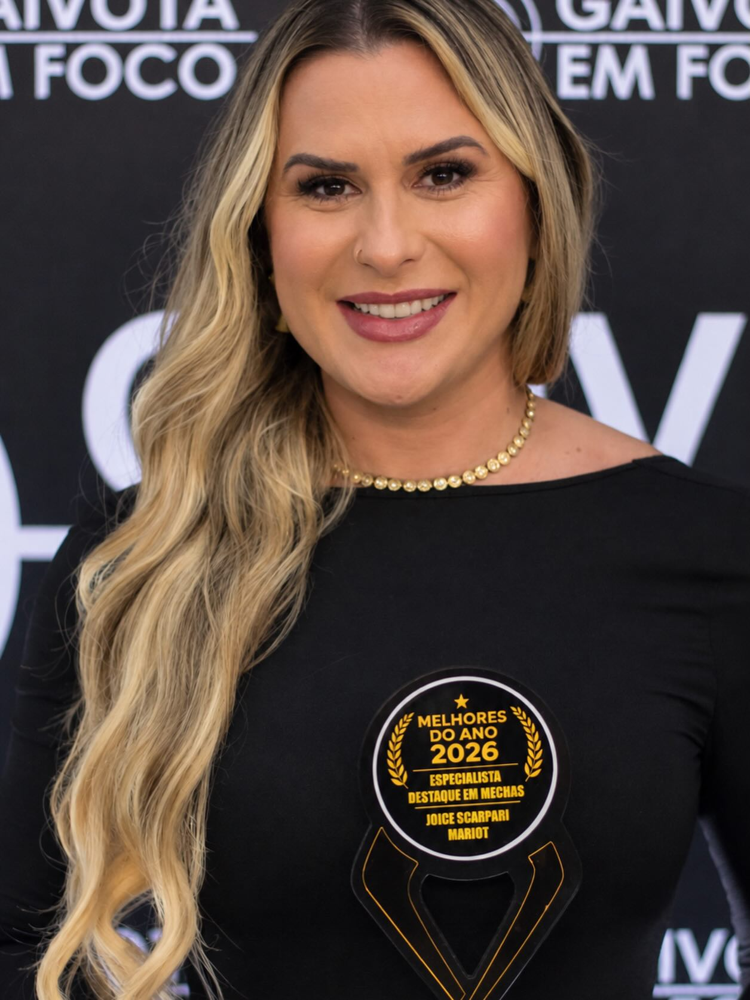

Medo de errar no clareamento
Insegurança na hora de abrir a cor, com receio de quebrar os fios ou manchar o resultado.
Especialista Destaque em Mechas · Melhores do Ano 2026
Formação profissional em coloração com Joice Mariot. Aprenda o método que ela aplica todos os dias no salão para criar loiros e morenas iluminadas com segurança e resultado previsível.

Você se identifica?
Insegurança na hora de abrir a cor, com receio de quebrar os fios ou manchar o resultado.
Resultados amarelados, alaranjados ou diferentes da referência que a cliente trouxe.
Cada atendimento é uma aposta, sem um passo a passo claro do diagnóstico à finalização.
Sem segurança no próprio resultado, fica difícil valorizar e cobrar pelo seu trabalho.
Não é falta de talento. É falta de método.

O método
Uma formação construída a partir da rotina real de atendimento, com foco no que realmente define um resultado de alto padrão.
Entender o cabelo, o histórico químico e o desejo da cliente antes de qualquer produto.
Divisões, aplicação e controle do clareamento com consistência em cada mecha.
Tonalização e finalização que entregam o tom planejado, com os fios saudáveis.
Resultados reais
Blog
Guias curtos sobre as técnicas que a Joice usa no salão: o que são, para quem servem e o que observar antes de começar.
Conteúdo programático
Uma sequência lógica, módulo a módulo, para você construir domínio técnico com segurança.
Quero me inscreverAvaliação do fio, histórico químico, testes e alinhamento de expectativa com a cliente.
Fundo de clareamento, neutralização e escolha correta de produtos e volumes.
Divisões, espessura, saturação e controle do clareamento mecha a mecha.
Construção completa dos dois estilos, da referência ao resultado.
Matização, cuidados pós-química e a entrega de um resultado de alto padrão.
Perfil da aluna

Sua instrutora
Cabeleireira especialista em coloração, reconhecida como Especialista Destaque em Mechas no Melhores do Ano 2026.
No dia a dia do salão, a Joice transforma loiros e morenas iluminadas com técnica, cuidado e atenção a cada detalhe. Nesta formação, ela compartilha o método por trás desses resultados para que você entregue o mesmo padrão às suas clientes.
Depoimentos
Inscrição
O mesmo método, em dois formatos. Estude no seu ritmo ou aprenda na prática, lado a lado com a Joice.
Curso online
Aulas gravadas para assistir de onde estiver, quantas vezes precisar.
Curso presencial
Imersão prática com acompanhamento de perto em cada etapa.
Ficou em dúvida sobre qual formato escolher? Fale com a Joice ↗
Perguntas frequentes
Não encontrou o que procurava? Fale direto com a Joice.
Falar no WhatsAppConverse com a Joice para saber qual formato é mais indicado para o seu momento profissional.
No online você assiste às aulas gravadas no seu ritmo. No presencial você pratica ao lado da Joice, com acompanhamento de perto em cada etapa.
Após a confirmação da compra, você recebe as instruções de acesso pelos contatos informados no pagamento.
O local é informado na confirmação da sua vaga.
As formas de pagamento aparecem na página de compra. Para o presencial, combine diretamente com a Joice.
Confirme com a Joice os detalhes de certificação de cada formato.
O próximo passo é seu
Atendimento no salão
Além da formação, a Joice atende clientes no salão. Conheça os serviços e agende o seu horário.
Loiros e morenas iluminadas planejados de forma personalizada após a avaliação do seu cabelo.
Brazilian keratin e alisamento, com indicação conforme avaliação profissional.
Penteados e maquiagem para ocasiões especiais. Consulte a disponibilidade.
Localização & contato